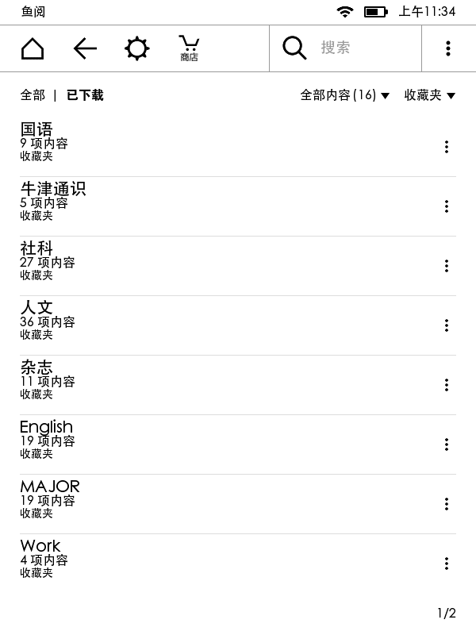
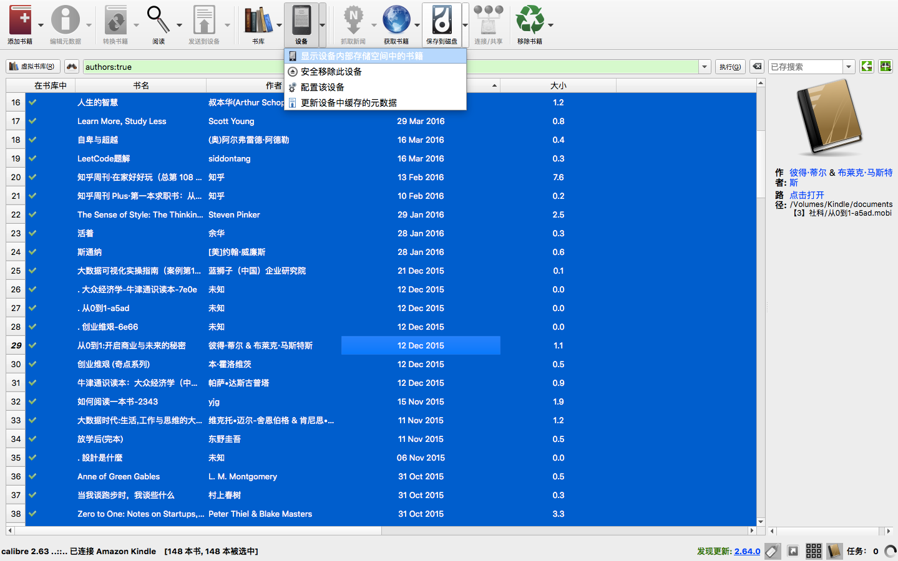
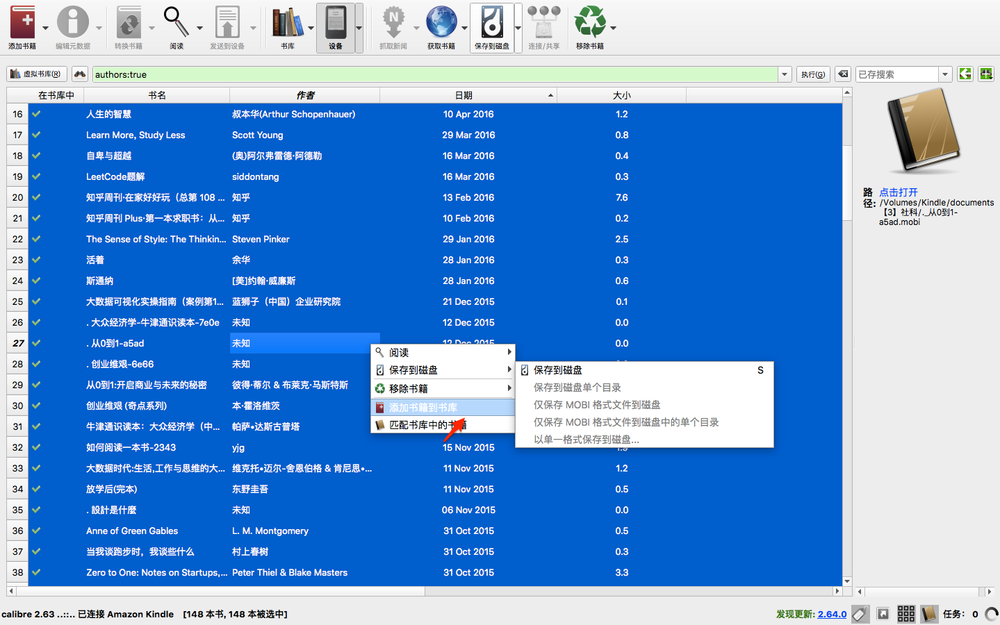
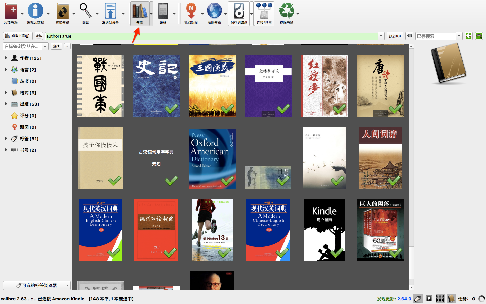

Kindle整理
Kindle用了一段时间之后，分类和书籍越来越臃肿。很多书其实都可以归档了，一段时间之后，不免想要重新来过。所以，准备将之前的数据打包，重新开始Kindle的使用之旅。

备份书籍
如果你有安装Calibre这一电子书管理神奇，那么备份书籍和管理将十分简单。
- 连接Kindle到电脑
Calibre菜单中选择设备，查看设备书籍

将书籍全选之后，右键空白处，选择添加书籍到书库即可。


最好，再将Kindle磁盘中所有内容打包备份。
重置Kindle
重置之前，确保已经备份所有文件。
在主页上，点击【菜单】图标，然后点击【设置】。
再次点击【菜单】图标，然后点击【重置设备】。Kindle将重新启动。
要再次使用您的Kindle，需要连接无线网络并注册Kindle。
tip: 如果你有自己的字典，可以在重新注册之后，再将之前备份的字典，拷贝到对应的字典目录。
你还可以在 设置-个性化您的Kinde-高级选项-特惠 中关闭广告推送。
重新开启一段读书旅途吧。
Copyright © 2014-2016 Azure Yu. Theme used GitHub CSS.